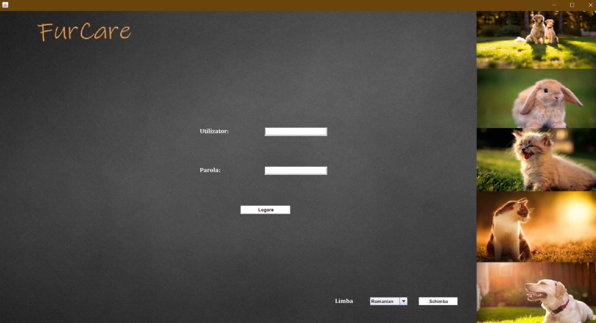
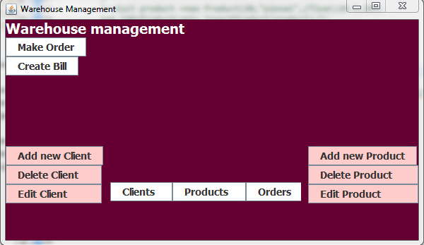
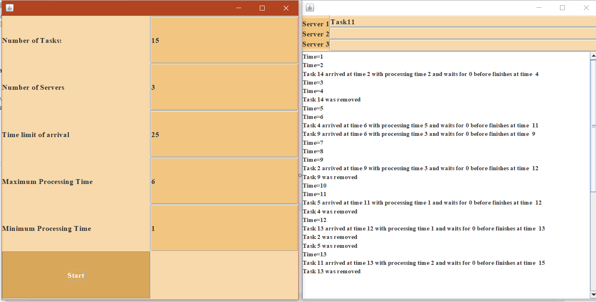

Let me show you my work...
Java (Spring) - C - SQL - HTML - CSS - React JS
Hard Working - Friendly - Creative - Communicative - Organized - Open-minded
Online Medication Platform

This is a distributed application which helps patients follow their medication plans and caregivers to manage their patients.
Technical description
This project consists of 4 applications:
1. Backend App - built using Java Spring
2. Frontend App - built using React JS
3. Notification Producer - sends messages to a RabbitMQ queue and the Backend consumes them and sends them to the Frontend in real-time through WebSockets.
4. MedicationDispenser - is a Desktop app that communicates with the Backend through Hessian RPC. It displays the medication that needs to be taken and notifies the server if it was taken.
MM Cakes

This website was built for MMCakes pastry so that clients can see the products, information about the business and contact information.
Technical description
This was the first project in which I had the opportunity to work with the "heart" of the Front End development, also known as HTML, CSS and JavaScript. The website consists of 9 HTML pages styled using CSS and I also used a few JavaScript elements. For the website to look good on all devices I designed it to be responsive.
Animal Center Management
FurCare is an app where doctors can see the information about the animals they treat and nurses can make appointments or register a new animal.
Technical description
This is a client-server app which means that there are 2 separate applications and they communicate through sockets. The logic of the application is implemented in the server app by the Persistence Layer and the Model Layer and the Presentation Layer is implemented in the client app through Views and Controllers. For the database I used the MySQL Workbench tool and for mapping I used the Hibernate framework. The GUI was developed using Java SWING toolkit. The application displays the option for choosing between 3 languages which was implemented using the Observer Pattern.
Lambda Expressions and Stream Processing

This Java App shows the power of Stream Processing and the output generated is a list of daily human activities that don't meet different criteria.
Technical description
The main purpose of this app was to perform different operations on the data using lambda expressions. The first step was reading the data from the file in the form of a stream of strings and performing the split operation through a lambda expression. After getting the list of activities I executed different filter operations to obtain the data such asa the number of monitored days, the number of appearances for each activity, the number of appearances for each activity per day and the duration of each ativity.
Restaurant Management

There are 3 types of users that can log in to this app: the administrator can modify the menu, the waiter can make orders and the chief receives the orders.
Technical description
This app was built based on the layered architecture. The Data Access Layer is responsible for the serialization and deserialization of the data. The Business Layer encapsulates the logic of the application and the GUI is implemented in the Presentation Layer. When the applications launches the menu items from the file will be deserialized and displayed in the interface. When a new menu item is added, it is also serialized in the file. The Composite Pattern was used for modelling the menu items and the Observer Pattern for notifying the chef when a new order is made.
Order Management
This app facilitates the order management of a warehouse by offering CRUD operations on the information about products, clients and orders.
Technical description
This type of application requires a layered architecture. The Data Access Layer is the lowest layer and is responsible with the database connection and the query logic. The Model Layer is used to create objects that store and retrieve the data from the database. The Business Logic Layer encapsulates the logic of the application and makes the connection between the Data Access Layer and the Presentation Layer. The GUI is implemented in the Presentation Layer. For the database I used the MySQL Workbench tool and the Java application has access to the database through the JDBC.
Queuing System Simulation
A given number of queues can be simulated with this app by giving a number of tasks and some time parameters.
Technical description
For this app I implemented a simulation system that uses threads as servers and a component that generates a number of tasks with random times of arrival in the given interval. Each task has a processing time and will be assigned to a server. Each thread will be asleep for a period of time equal with the processing time of the task and after that the task will be removed from the queue. The strategy of the scheduler component is 'shortest-queue' which means that the tasks are assigned to the servers which are less busy.
Polynomial Calculator

This calculator performs different operations such as addition, difference, multiplication, division, derivation and integration on polynomials.
This app was my first real contact with a Java project where I was able to put into practice all the information I gathered about this object-oriented language during the OOP class.
Technical description
The app was built using the MVC architecture. For the graphic interface I used the Swing toolkit. The implementation is based on string parsing to split the given polynomials into monomials. Then, the corresponding operation is applied to the monomials and the resulting polynomial is displayed.